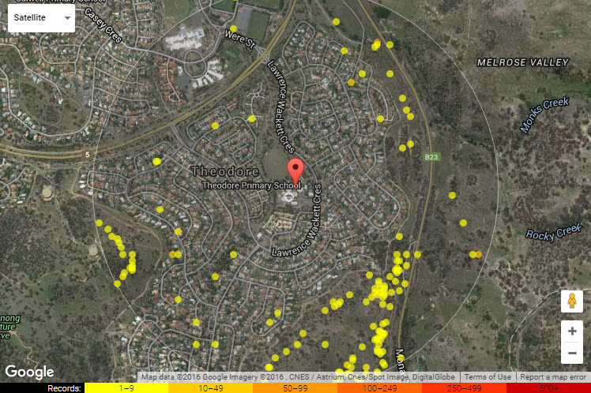

This work is licensed under a Creative Commons Attribution 3.0 Australia License 
Show images of common local birds to start. For instructions on how to find what’s in your area and species images, see ALA User Guide 1 - Finding the species located in your area and ALA Teacher Guide 6 - Finding information about a species. You may like to use the common birds pictured below as a starting point.
Australian Magpie and Laughing Kookaburra. Source: FlickrEOL, Image by: Leo
Questions:
What birds have you seen in the school yard? If you don’t know the name of the bird, describe it. Where did you see them? What time of day did you see them? What were the birds doing when you saw them? What about in your backyard? What about in the park? Were they making any noise? Were there more of one type of bird than another?
Note the names, places etc. on the board.
Use the Atlas of Living Australia to see what sorts of birds have been sighted in the area. See ALA User Guide 1 - Finding the species located in your area.

Look at the ALA’s map of the schoolyard – What do you use maps for? What can you see on this map? What use might this map be for scientists? What sorts of other things might scientists use maps for?
Look at the birds on the list.
A table from the Atlas showing the bird records surrounding a primary school in the ACT
Questions:
Has anyone seen any of these birds? Are there any common birds you’ve seen that are missing from the list?
Based on the discussion and ALA information, record in a table what birds they think they will see on a walk around the school yard. Include how many and whether they will be on the ground, in the sky or in a tree. (See Activity 1 - Predicted Birds Table)
Gathering data
Walk students through the school yard and use another table to gather data about the birds they see. Discuss with students the best time of the school day to go and how they will need to behave to get the most information. Ask students to take digital photographs of some of the birds they see. Record the observations in a table (Activity 2 - Birds I saw in the schoolyard) and ask students to take as many notes as they can about the birds they see.
Using the data
Record the sightings in the Atlas of Living Australia (See ALA User Guide 4 - How to log a sighting). The students will then be able to see their sightings appear on the map.
Students can share and discuss their data and represent it on a bar graph. See Activity 3 - Draw a graph of birds seen in the school yard or Activity 4 - Use Excel to graph numbers of birds in the school yard.
Questions:
Did you see the birds that you predicted you would see? Why/why not?
What are some similarities between the birds that you saw? What are some differences? What are some things all birds have in common? Complete Activity 5 - Venn diagram using features of two different birds.
As an extension activity, you might like to complete a walk through nearby bushland/parkland to gather more data. Make observations of the birds that were seen there and take photos. Record observations – Activity 2 - Birds I saw in the schoolyard.
Were there any different birds to what was seen in the school yard? Why/why not? Were there any more or less birds? Why/why not?
Record these sightings in the Atlas of Living Australia also. (See ALA User Guide 4 - How to log a sighting.)
Draw a map of the school yard. Like the ALA map, show the points where you saw individual birds. See Activity 6 - Draw a school yard map
There are many activities that cover the concept of Living and non-living things in an environment. One of the ones we recommend is from the Australian Science Teachers Association http://scienceweb.asta.edu.au/years-3-4/unit2/overview/yr34-unit2-overview.htm. Once the students have completed the Living or non-living lessons there, they can use the map that was drawn for Activity 6 to label living and non-living things in the school yard.
Now the students have a lot of knowledge of the birds in the school yard and where they are found, they could complete Activity 7 - Letter to principal about school yard plans.
Available activities:
Associated Australian Curriculum requirements for Years 3-4